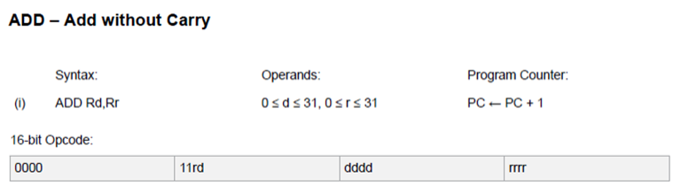

9 Microcontroller Architecture – Program Operation
Presentation version of these notes.

Introduction
- In Introduction to Microcontrollers and Microcontroller Architecture, we discussed some of the core components of a microcontroller’s architecture including the general purpose registers, status register, program counter and stack pointers.
- Aside from the program counter, these are registers which the programmer can directly access and manipulate.
- In this section, we will look at some of the other components in the microcontroller CPU including the control unit, clock, memory address register, memory data register, instruction register and decoder.
- After introducing these components an example program will be demonstrated that is written in C language, showing the translation to assembly language using the listing file, followed by an explanation of how the program is executed through the fetch-decode-execute cycle.
Contents

9.1 Architecture recap
9.1.1 Arithmetic Logic Unit (ALU)
The Arithmetic Logic Unit (ALU) (Figure 9.1), is the part of the processor that performs arithmetic and logic operations on data from the storage area.
Memory is used to store data and information but the real goal of the MCU is computation or manipulating data in a structured and purposeful way, like adding two numbers together. These operations are handled by the ALU which is the numerical and logical brain of the MCU. The Atmel ATmega328 has an 8-bit ALU which takes two 8-bit inputs, an opcode describing the operation to perform and outputs an 8-bit result along with a series of 1-bit flags which we can access through the status register.
First, data are read from storage into the ALU’s data input ports. Once inside the ALU, they’re modified by means of an arithmetic or logic operation (ADD, SUB, AND, OR …), and then they’re written back to storage via the ALU’s output port.
Depending on the result of the computation, certain flags in the status register will be set or unset.
To illustrate this, here is the reference manual entry for the add without carry operator (ADD)
9.1.2 The CPU Core
The CPU core of the Atmel ATmega328 microcontroller is illustrated in Figure 9.2.
The CPU core of the Atmel ATmega328 microcontroller with program counter, status and control register, 32 general registers, and ALU highlighted.
The highlighted components are:
General Purpose Registers – 32 8-bit wide registers which are used by the CPU to hold operands and immediate results of arithmetic and logic operations.
Program Counter – a 14-bit wide register that stores the address of the next instruction or operand to be fetched.
Stack Pointer – 2 8-bit wide registers that stores the address of the last item in the stack.
Status and Control Register – an 8-bit wide register that contains information about the state of the processor based on the execution of the last instruction1.
The stack is an area in SRAM where data/information/MCU state can be temporarily pushed on and popped off - the stack pointer holds the memory address of the top of the stack.
The program counter holds the address of the next address to be executed.
The general purpose registers are located at the bottom of the data space so can be accessed directly by the ALU. Lower spec microcontrollers/CPUs may only have a single register which is referred to as an accumulator.
9.2 Additional components
9.2.1 Simplified block diagram of the microcontroller core
For this section we will used the simplified block diagram shown in Figure 9.3 to represent the microcontroller core. This shows the parts that we have already seen as well as the new ones, highlighted, that we will discuss in the following.
9.2.2 Block 1: Clock
The clock generates a signal that oscillates between a high and a low state and acts like a metronome which coordinates/synchronizes the actions of the different microcontroller elements.
The clock signal typically takes the form of a square wave with a 50% duty cycle2 and a fixed frequency see Figure 9.4.
In older microcontrollers the clock signal was generated by an external circuit, but modern microcontrollers typically come with an external crystal as well as an internal oscillator.
At every cycle of the clock, a step of the fetch-decode-execute cycle is performed.
The ATmega328 is shipped with an internal RC oscillator with a frequency of 8MHz and the Arduino nano board includes a 16MHz external crystal which is typically set to be the default clock3.
9.2.2.1 Internal Clock
Internal clocks are made from RC oscillators.
Limited manufacturing abilities mean that there are large differences between individual microcontrollers. These differences are typically \(\pm 10\%\), but clocks can usually be tuned to \(\pm 0.5\%\).
Advantages
- Cheaper
- Leaves pins that are used for the external clock source, e.g. see atmel_clk_pins`, available for other functions such as I/O
- Simplifies PCB design and routing for high frequency traces.
9.2.2.2 External clock
Many components inside the microcontroller will use a scaled version of the clock signal (recall the ADC) and so high clock accuracy is not needed. However, for other applications, such as communication based applications like the CAN bus, USB and Ethernet, high frequency and accurate clock signals are required.
For these applications, external ceramic resonators or crystals have a much higher accuracy when it comes to frequency as well as stability.
9.2.2.3 The Atmel ATmega328 clock
A block diagram of the clock circuity is given in Figure 9.7. This is a complex diagram and the details are not too important. What is important is to note is how the clock signal is distributed to all the major subsystems. This is to ensure that all the internal operations that the microcontrollers are carried out in lock-step with the clock signal and in synchronization with each other. The clock sources are shown at the bottom of the diagram and the major blocks which use the clock are at the top. The blocks in the centre of the diagram are concerned with the functions needed to monitor the status of the microcontroller.
The CKSEL3..0 are special memory locations in flash memory (“fuses”) that are used to set the clock sources as shown in Table 9.1 of the data sheet reproduced below.
9.2.2.4 Programmer’s registers for clock control
There are two registers accessible to the programmer with respect to the clock. These are
OSCCAL- Oscillation Calibration Register used to trim the calibrated internal RC oscillator to remove process variations from the oscillator frequency.yCLKPR– Clock Prescale Register whose bits define the division factor between the selected clock source and the internal system clock. These bits can be set at run-time to vary the clock frequency to suit the application requirements.
9.2.3 Block 2: Control Unit
The control unit coordinates all activities and sends signals through the control bus to all elements of the microcontroller, including the ALU, memory, and input/output, instructing them how to respond to the instructions from the program code it has just read and interpreted from the memory unit.
The control unit is responsible for
- Coordinating and controlling activities of the CPU;
- Managing data flow between other components and the CPU;
- Acknowledging and accepting the next instruction; and
- Storing the resulting data back into a memory unit.
9.2.4 Block 3: Memory Address Register (MAR)
During operation the address in the program counter is loaded into the Memory Address Register and a request is sent onto the address bus to retrieve the data stored at that memory location.
9.2.5 Block 4: Memory Data Register (MDR)
The data at a particular memory location is loaded from the data bus into the Memory Data Register before being passed to the instruction register or being operated on.
9.2.6 Block 5: Instruction Register (IR)
After fetching an instruction from program memory, the microcontroller stores it in the instruction register.
9.2.7 Block 6: Instruction Decoder (ID)
- The instruction decoder decodes the instruction opcode from the instruction register and generates appropriate control signals to execute the instruction.
- It contains a lookup table featuring a mapping of all binary instructions in the microcontroller’s instruction set architecture.
- Once an instruction arrives at the instruction register it is passed to the decoder. Once decoded the output is passed to the control unit to select the correct hardware for the operation or to get the next word of data from memory.
A summary of some example operations taken from section 5 of the AVR Instruction Set Manual (Atmel 2020) are given in Table 9.1 in the notes.
The interested reader will find full details at the manual reference quoted in the table.
| 16 Bit Opcode | Operation | Usage | Syntax | Program Counter (PC) | Manual reference |
|---|---|---|---|---|---|
| 0001 11rd dddd rrrr | Add with carry (ADC) |
Rd <- Rd + Rr + C4 | ADD Rd, Rr |
PC <- PC + 1 | 5.1 |
| 0000 11rd dddd rrrr | Add without carry (ADD) |
Rd <- Rd + Rr | ADD Rd, Rr |
PC <- PC + 1 | 5.2 |
| 1001 0110 KKdd KKKK | Add Immedidate to Word (ADIW) |
R[d+1]:Rd <- R[d+1]:Rd + K | ADIW Rd+1:Rd,K |
PC <- PC + 1 | 5.3 |
| 0010 00rd dddd rrrr | Logical AND (AND) |
Rd <- Rd & Rr | AND Rd, Rr |
PC <- PC + 1 | 5.4 |
| 0111 KKKK dddd KKKK | Logical AND with Immediate (ANDI) |
Rd <- Rd & K | ANDI Rd, K |
PC <- PC + 1 | 5.5 |
| 1001 010d dddd 0101 | Arithmetic Shift Right (ASR) |
ASR Rd |
PC <- PC + 1 | 5.6 | |
| 1001 0100 1sss 1000 | Bit Clear in SREG (BCLR) |
SREG(s) <- 0 | BCLR s |
PC <- PC + 1 | 5.7 |
9.2.8 Busses
Inside the microcontroller, components communicate with each other using sets of parallel connectors known as buses. The processor is connected to the main memory by three separate buses as illustrated in Figure 9.8.
The three buses are:
- Address bus: a unidirectional bus from the processor to the memory or an I/O controller that carries the location of the data to be read from or written to.
- Data bus: a bi-directional pathway that carries data or instructions between processor components. The width of data bus is key in determining the overall computer performance. The AVR CPU data bus is 8-bits wide but the word size is 16-bits meaning the data bus has to use two cloxk cycles to fetch each byte of a word from the main memory.
- Control bus: is a bi-directional pathway that carries command, timing and specific status information among components. Examples of control information include:
- Read/write from/to memory
- Read/write from/to I/O port
- Request access to the data bus
- Grant access to the data bus
- Sync clock
- Reset
9.3 Fetch-Decode-Execute cycle
9.3.1 Recap: Program Instructions
The microcontroller program consists of a sequence of instructions, each consisting of an opcode (LDI, ADD, OUT, etc…) defining the operation to be carried out and an operand containing the data or location of the data which the instruction is to operate on.
Machine Code
1110011100001001
1110011000010111
0000111100000001
1001001100000000
11111111000000009.3.2 Fetch-Decode-Execute Cycle
Each instruction is carried out by a sequence of operations, known as the fetch-decode-execute cycle illustrated as a flow chart in Figure 9.9.
9.3.2.1 Flowchart of fetch-decode-execute cycle
The fetch-decode-execute cycle follows the following steps
9.3.2.2 Fetch
- Fetch the operator code from memory via the data bus and store it in the instruction register.
This occurs by placing an address on the address bus and then reading the instruction at this address from the data bus.
- The address of the instruction to be fetched is stored in the program counter which is then loaded into the Memory Address Register and a request is sent onto the address bus.
- The program counter is then incremented to point to the next sequential memory address.
- The contents of the memory location are then transferred through the data bus to the Memory Data Register and then into the instruction register before passing to the decoder.
9.3.2.3 Decode
- Decode the operator code within the instruction decoder and determine the nature of the operation specified (load immediately, load a byte from memory, load a word from memory). Fetch further data using the address and data busses as necessary based on the instruction decoded.
9.3.2.4 Execute
- Execute the instruction on the necessary operands.
9.3.2.5 Continue
- The fetch-decode-execute is now complete and starts again for the next code memory location indicated by the program counter.
9.3.3 Fetch-Decode-Execute cycle algorithm
The process is illustrated as an algorithm below
Step 1:
MAR <- (PC)The address in the program counter (PC) is transferred to the memory address register (MAR).
Step 2:
(PC) <- (PC) + 1The program counter is incremented to point to the next instruction.
Step 3:
MDR <- (MAR)The contents of the location specified by the memory address register (MAR) are transferred to the memory data register (MDR).
Step 4:
IR <- (MDR)The contents of the memory data register (MDR) are loaded to the instruction register (IR) and then decoded.
9.4 An Example Program
{kind=link}
9.4.1 Recall the digital I/O program…
#include <stdint.h>
//I/O and ADC Register definitions taken from datasheet
#define PORTD (*(volatile uint8_t *)(0x2B))
#define DDRD (*(volatile uint8_t *)(0x2A))
#define PIND (*(volatile uint8_t *)(0x29))
#define PORTB (*(volatile uint8_t *)(0x25))
#define DDRB (*(volatile uint8_t *)(0x24))
#define PINB (*(volatile uint8_t *)(0x23))
int main(void)
{
//Set Data Direction Registers
DDRD = DDRD & 0b11110011; //setup bits 2 and 3 of port D as inputs
DDRB = DDRB | 0b00000011; //setup bits 0 and 1 of port B as outputs
PORTB = PORTB & 0b11111100; //both pins B0 (D8) and B1 (D9) start low
PORTD = PORTD | 0b00001100; // Enable the pull up resistor for bits 2 and 3 of port D
for(;;)
{
if((PIND & 0b00000100) == 0)
{
PORTB = PORTB | 0b00000001; //sets port B, bit 0 to logic 1/high, switches the LED connected to D8 on
}
else if ((PIND & 0b00001000) == 0)
{
PORTB = PORTB | 0b00000010; //sets port B, bit 1 to logic 1/high, switches the LED connected to D9 on
}
else
{
PORTB = PORTB & 0b11111100; //sets bits 0-5 of port B to logic 0/low, switches off both the LED's
}
}
}Code: main.c
9.4.2 Listing File
This is the listing file (refer to Listing 9.2) generated by the assembler which shows each line of C code and what it has been translated to in assembly language along with the memory address the instruction will be stored at5.
00000080 <main>:
#define PINB (*(volatile uint8_t *)(0x23))
int main(void)
{
//Set Data Direction Registers
DDRD = DDRD & 0b11110011; //setup bits 2 and 3 of port D as inputs
80: 8a b1 in r24, 0x0a ; 10
82: 83 7f andi r24, 0xF3 ; 243
84: 8a b9 out 0x0a, r24 ; 10
DDRB = DDRB | 0b00000011; //setup bits 0 and 1 of port B as outputs
86: 84 b1 in r24, 0x04 ; 4
88: 83 60 ori r24, 0x03 ; 3
8a: 84 b9 out 0x04, r24 ; 4
PORTB = PORTB & 0b11111100; //both pins B0 (D8) and B1 (D9) start low
8c: 85 b1 in r24, 0x05 ; 5
8e: 8c 7f andi r24, 0xFC ; 252
90: 85 b9 out 0x05, r24 ; 5
PORTD = PORTD | 0b00001100; // Enable the pull up resistor for bits 2 and 3 of port D
92: 8b b1 in r24, 0x0b ; 11
94: 8c 60 ori r24, 0x0C ; 12
96: 8b b9 out 0x0b, r24 ; 11
for(;;)
{
if((PIND & 0b00000100) == 0)
98: 4a 99 sbic 0x09, 2 ; 9
9a: 02 c0 rjmp .+4 ; 0xa0 <main+0x20>
{
PORTB = PORTB | 0b00000001; //sets port B, bit 0 to logic 1/high, switches the LED connected to D8 on
9c: 28 9a sbi 0x05, 0 ; 5
9e: fc cf rjmp .-8 ; 0x98 <main+0x18>
}
else if ((PIND & 0b00001000) == 0)
a0: 4b 99 sbic 0x09, 3 ; 9
a2: 02 c0 rjmp .+4 ; 0xa8 <main+0x28>
{
PORTB = PORTB | 0b00000010; //sets port B, bit 1 to logic 1/high, switches the LED connected to D9 on
a4: 29 9a sbi 0x05, 1 ; 5
a6: f8 cf rjmp .-16 ; 0x98 <main+0x18>
}
else
{
PORTB = PORTB & 0b11111100; //sets bits 0-5 of port B to logic 0/low, switches off both the LED's
a8: 85 b1 in r24, 0x05 ; 5
aa: 8c 7f andi r24, 0xFC ; 252
ac: 85 b9 out 0x05, r24 ; 5
ae: f4 cf rjmp .-24 ; 0x98 <main+0x18>
000000b0 <_exit>:
b0: f8 94 cli
000000b2 <__stop_program>:
b2: ff cf rjmp .-2 ; 0xb2 <__stop_program>9.4.3 Fetch

Fetch operation described
- The PC is set to $0040.
- The contents of the PC is copied to the MAR and transferred via the address bus to the memory controller.
- The value of PC is incremented.
- The contents of the memory location specified by the MAR are transferred via the data bus to the MDR
- The contents of the MDR are placed into the IR.
9.4.4 Decode

Decode operation described
The program instruction at line 40 is b1 8a = 1011 0001 1000 1010.
The most significant 5 bits 10110 correspond to the IN opcode (Atmel 2020, sec. 5.61).
From the documentation the remaining bits are distributed as per the table below:
| opcode | AA | ddddd | AAAA |
|---|---|---|---|
| 10110 | 00 | 11000 | 1010 |
So
AAAAAA = 00 1010 (0x0A) and ddddd = 11000 (24).
Disassembling the instruction gives:
in r24, 0x0awhich in words is read I/O register 0x0A into register 24.
9.4.5 Execute

Execute operation described
- MAR set to I/O register $000A (DDRD) and transferred via the address bus to the memory controller.
- The contents of the memory location specified by the MAR are transferred via the data bus to the MDR.
- The contents of the MDR are copied to R24
9.4.6 Assembly to Machine Code
The assembly/machine code instructions equivalent to the program given in Section 9.3.1 is tabulated in Table 9.2. Refer also to Introduction to Assembly Language.
| Assembler | Machine Code | Documentation |
|---|---|---|
ldi r16, 0b01111001 |
1110 0111 0000 1001 | |
ldi r17, 0b01100111 |
1110 0110 0001 0111 | See cell above |
add r16, r17 |
0000 1111 0000 0001 |  |
sts 0xFF00, r16 |
1001 0011 0000 0000 1111 1111 0000 0000 |
Summary
In this section we have:
- Recapped the core components of the AVR CPU including the ALU, general purpose registers, program counter, stack pointer and status register as well as their function in the microcontroller.
- Looked at the function of some of the other components within the CPU including the clock, memory address register, memory data register, instruction register and decoder.
- Looked at an example of what happens during program execution through the fetch-decode-execute cycle.
On Canvas
This week on the canvas course pages, you will find a short quiz to test your knowledge on these topics.
Next time
The status and control register also contains bits that can change the operation of the microcontroller. For example the global interrupt enable bit is set if interrupts have been enabled. Interrupts will be discussed in EG-252 next year.↩︎
The duty cycle is \(\mu=T_\mathrm{on}/\left(T_\mathrm{on}+T_\mathrm{off}\right)\) and \(\mu = 0.5\) (50%) if \(T_\mathrm{on}=T_\mathrm{off}\). That is for half of a cycle (i.e. for \(T_\mathrm{on}\)s) it is in a high state and for the other half of the cycle (for \(T_\mathrm{off}\)s) it is in a low state.↩︎
If the frequency is \(x\)MHz, then the microcontroller can execute \(x\) million instructions a second and each instruction takes 1/x microseconds to execute. Therefore, for the ATmega328 with internal clock the execution speed is 0.125\(\mu\)s per instruction. For the ATmega328 on the Arduino nano it is half this.↩︎
The carry flag C comes from the status register.↩︎
This file is not completely accurate as the assembler used has assumed the memory space is 8-bits wide where as it is actually 16-bits wide. This means each memory address shown should be divided by 2.↩︎
Copyright © 2021-2024 Swansea University. All rights reserved.